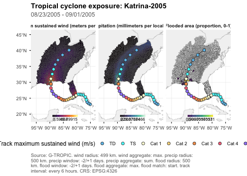
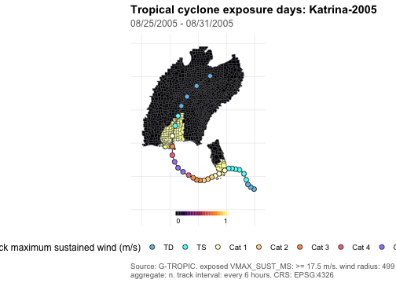
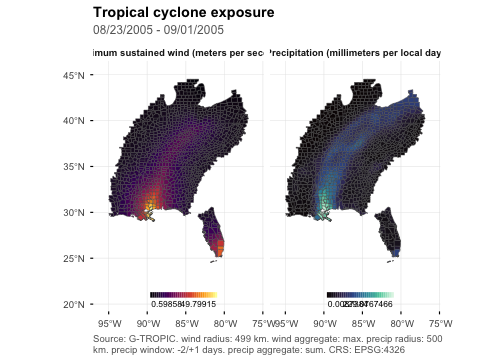
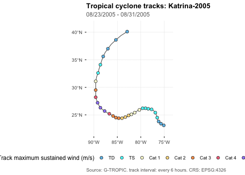

library(gtropic)
library(dplyr)
#>
#> Attaching package: 'dplyr'
#> The following objects are masked from 'package:stats':
#>
#> filter, lag
#> The following objects are masked from 'package:base':
#>
#> intersect, setdiff, setequal, uniongtropic_plot() turns tables already returned by
gtropic_data() into static exposure maps, exposure-count
maps, and storm-track maps. It also creates interactive exposure and
count maps. Plotting never retrieves missing tables or recomputes
published exposure values and storm distances.
Katrina, 2005
This vignette uses the United States records for Hurricane Katrina. Request the geometry and track tables with the exposure data because plotting only uses tables already present in the retrieval result.
katrina <- gtropic_data(
STORM_NAME = "Katrina-2005",
WHO_ENTITY = "United States",
date_range = c(2005, 2005),
tables = c("wind", "precip", "flood", "adm2", "geometry", "tracks")
)
#> Discovering datasets in collection "gtropic".
#> Downloading 'metadata/adm2.parquet'.
#> Downloading '02_wind/storm_metadata/2005.parquet'.
#> Retrieving 8 files (141.3 MB) ; .
#> Downloading '02_wind/exposures/2005.parquet'.
#> Downloading '02_wind/zero_pairs/2005.parquet'.
#> Downloading '04_precip/2005.parquet'.
#> Downloading '03_flood/2005.parquet'.
#> Downloading '02_wind/storm_tracks/2005.parquet'.
#> Downloading 'metadata/adm2_geometry_simplified.parquet'.
katrina$wind <- katrina$wind |> filter(STORM_DIST_KM <= 500)gtropic_exposures() lists published metrics, units, and
default aggregations. Use it to select metrics appropriate to an
analysis rather than inferring their meaning from column names
alone.
unname(vapply(gtropic_exposures(), nrow, integer(1)))
#> [1] 6 1 3Static maps
An exposure map summarizes a selected published metric for each ADM2.
gtropic_plot(
katrina,
type = "exposure",
metric = c("VMAX_SUST_MS", "PRECIP_MM", "PROP_FLOODED_AREA"),
)
Count maps apply metric thresholds before counting distinct storms or local exposure days. The automatic caption records the selected definitions.
gtropic_plot(
katrina,
type = "count",
metric = "VMAX_SUST_MS",
count_unit = "days",
storm = "Katrina-2005",
basemap = "none",
gridlines = FALSE
)
metric, aggregate, palette,
and direction accept vectors aligned by position. This
makes a panel for each selected metric while preserving a separate,
hazard-appropriate scale for every panel.
gtropic_plot(
katrina,
type = "exposure",
metric = c("VMAX_SUST_MS", "PRECIP_MM"),
aggregate = c("max", "sum"),
palette = c("inferno", "mako"),
direction = c(1, 1),
storm = "Katrina-2005",
track = FALSE,
basemap = "none"
)
Storm tracks
Track maps use the published USA_WIND observations. By
default, their points are classified with saffir_simpson(),
which returns the conventional Saffir-Simpson category key in metres per
second. Supply a compatible data frame to track_map_key to
use a different classification, and use track_interval to
sample displayed points at three- or six-hour UTC intervals while
retaining the complete path.
gtropic_plot(
katrina,
type = "track",
storm = "Katrina-2005",
track_map_key = saffir_simpson(),
track_interval = 6,
basemap = "none"
)
Interactive maps
Set interactive = TRUE for a Leaflet exposure or count
map. Interactive maps use vector layers and do not require a tile-server
API key. Static gridlines do not apply to this output because Leaflet
maps have no plot axes.
gtropic_plot(
katrina,
type = "exposure",
metric = "VMAX_SUST_MS",
storm = "Katrina-2005",
interactive = TRUE,
basemap = "none"
)Saving plots
Static calls return ggplot objects, which can be extended with
ggplot2 layers and saved with gtropic_save() when the
analysis is ready for publication.
p <- gtropic_plot(
katrina,
type = "exposure",
metric = "VMAX_SUST_MS",
storm = "Katrina-2005",
basemap = "none"
) + theme_gtropic(base_size = 11)
gtropic_save(p, "katrina-wind-exposure.png", dpi = 300)